This article is a browsable reference to the analysis panels a
shinyngs application can present. Each entry describes what
the panel shows and what inputs it needs, drawn from the per-panel help
text that the app itself surfaces via the help icons in each panel’s
header.
Most panels are built on Shiny modules and share a common set of
controls. In particular, plotting panels use the
selectmatrix control group to choose an
experiment and assay (a features x
samples matrix), and to subset its rows and columns. Where
variance-based row selection is offered, the 1000 most variant rows are
selected by default, since the strongest patterns are usually clearest
in the more variable features. Panels that operate on differential
results additionally require contrasts (comparisons
between sample groups, with results in the object’s tests
slot), and gene-set panels require uploaded gene sets
(e.g. GO, KEGG, from GMT files).
Every plot below is backed by a standalone plotting function you can call directly on your own data. See reusing these plots outside Shiny for how to drive those functions without launching an app.
Exploratory
Panels for getting a first look at structure, quality, and clustering across samples. These operate on assay matrices and sample metadata; they do not require differential results.
PCA
Principal component analysis reduces high-dimensional data (tens of thousands of features) to a handful of components, each a fixed linear combination of the original features. The components plot plots the first components against one another and should separate samples by the strongest patterns in the data; colouring points by a sample variable (treatment, sex, sequencing lane) reveals which factors drive that structure. The loading plot shows which features contributed most to each component, and the scree plot shows the percentage of variance explained by each component (plus the cumulative total), helping you judge how many components are worth examining.
Inputs: an assay matrix (variable rows selected by default),
a choice of which components to display, and a sample variable to colour
by. Backed by: compile_pca_data, with points drawn
via interactive_scatterplot and the scree curve via
interactive_screeplot.
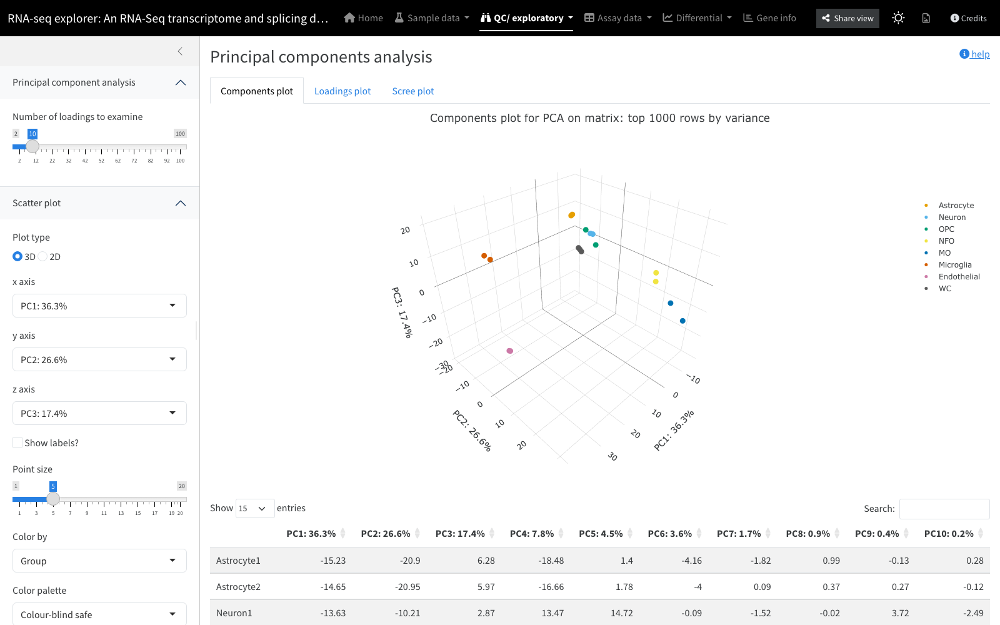
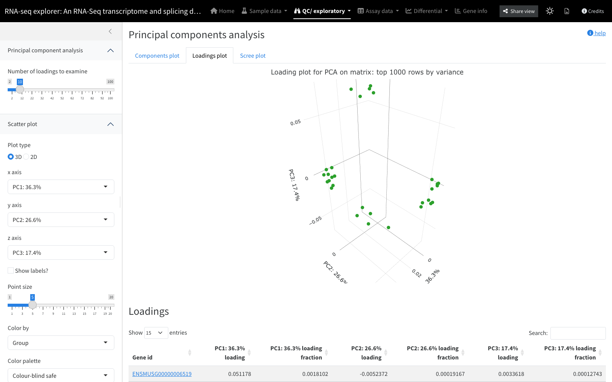
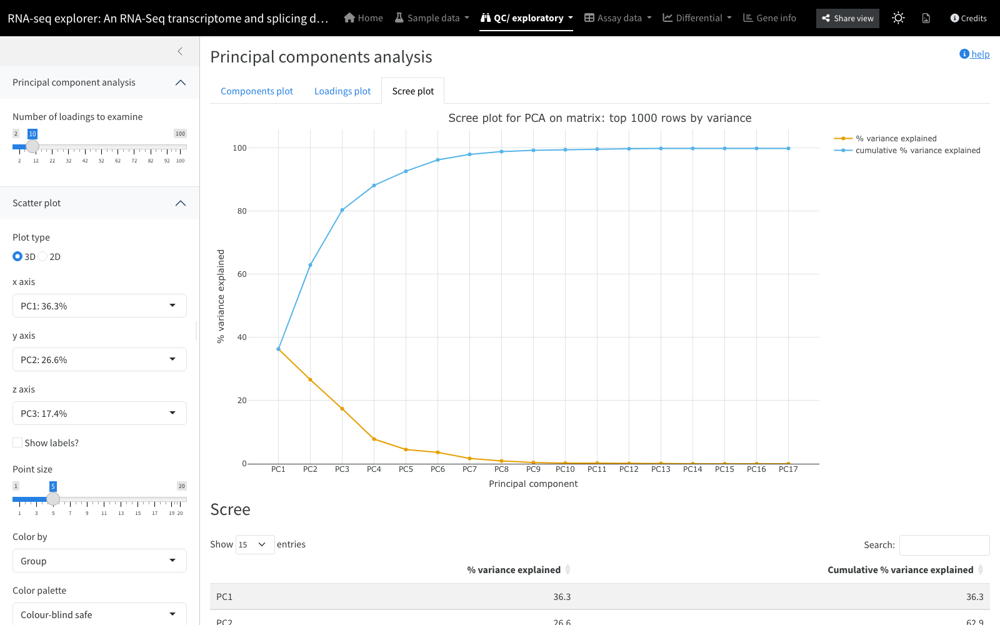
PCA vs experiment
A companion to the PCA panel that helps interpret what the components mean. An analysis of variance is run for each component against each experimental factor, and the resulting matrix of p-values is drawn as a heatmap. Ideally the key experimental variables are associated with the first, highest-variance components; strong association of a technical factor (e.g. sequencing lane) with an early component flags a variable to account for downstream.
Inputs: an assay matrix (variable rows by default) and the
set of experimental variables to test. Backed by:
interactive_pca_metadata_heatmap.
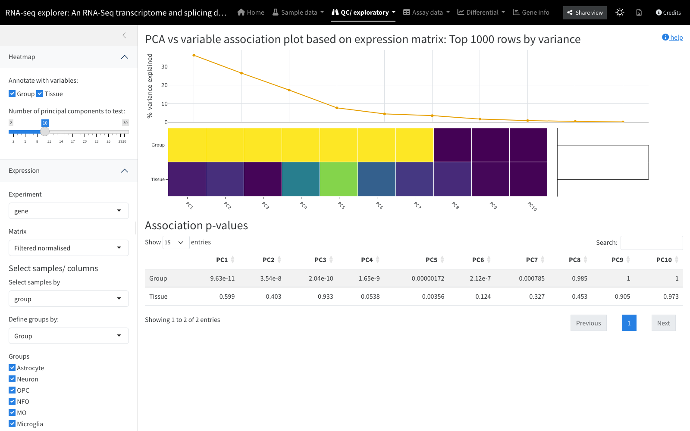
Sample clustering heatmap
Computes a matrix of correlation values between pairs of samples and draws it as a heatmap with an accompanying dendrogram, an alternative view of sample relatedness to the dendrogram panel. Experimental annotations can be added as coloured bars above the heatmap via the “Annotate with variables” control.
Inputs: an assay matrix (variable rows by default) and
optional annotation variables. Backed by:
interactive_heatmap.
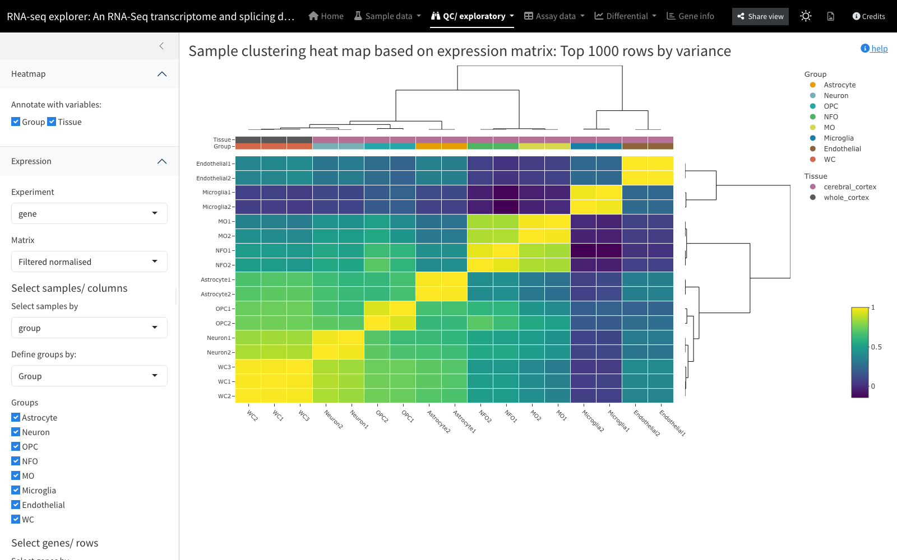
Dendrogram
Displays sample clustering dendrograms showing how related samples are to one another. If samples do not group as expected, the differential expression you are looking for between groups may not be present. Clustering controls let you choose the distance/similarity measure and the hierarchical clustering method, and you can colour samples by an experimental variable to aid interpretation.
Inputs: an assay matrix (variable rows by default; row
selection may also be “all” or a supplied gene set) and
distance/clustering choices. Backed by:
interactive_clustering_dendrogram.
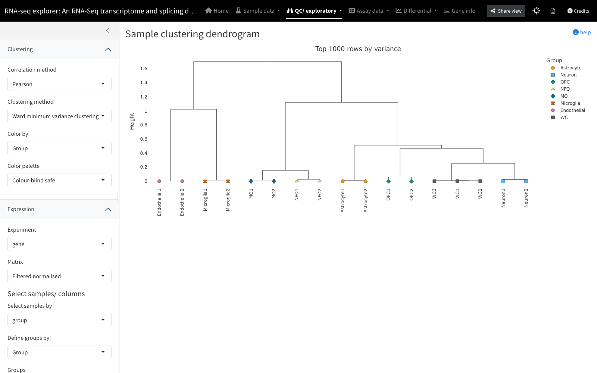
Boxplots / density
Illustrates the distribution of values in each sample, as box plots
(via ggplot2) or lines/density (via Plotly). A very
atypical distribution in a sample, for example an unusually low mean,
can point to sample-quality problems. Box plots become unmanageable
beyond about 20 samples, so line plots are the default for larger sample
counts. Whiskers extend to 1.5x the interquartile range by default;
points beyond them are treated as outliers, and mousing over an outlier
in the line plots reveals its identity.
Inputs: an assay matrix; comparing raw versus normalised
matrices can be informative. Backed by:
interactive_boxplot, interactive_densityplot,
and interactive_quartiles.
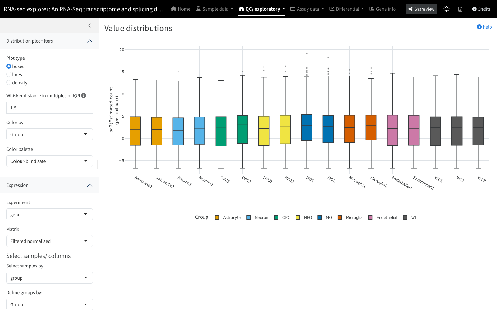
Expression heatmap
A standard expression heatmap plotted interactively with
heatmaply. Clustering dendrograms use a
Spearman-correlation distance passed to the ward.D2 method
of hclust(). Colours are scaled by row by default so trends
can be compared across rows. The data can optionally be summarised into
means per sample group.
Inputs: an assay matrix, with rows selectable by variance,
by an explicit list, or (where gene sets are uploaded) by a predefined
gene set. Backed by: interactive_heatmap.
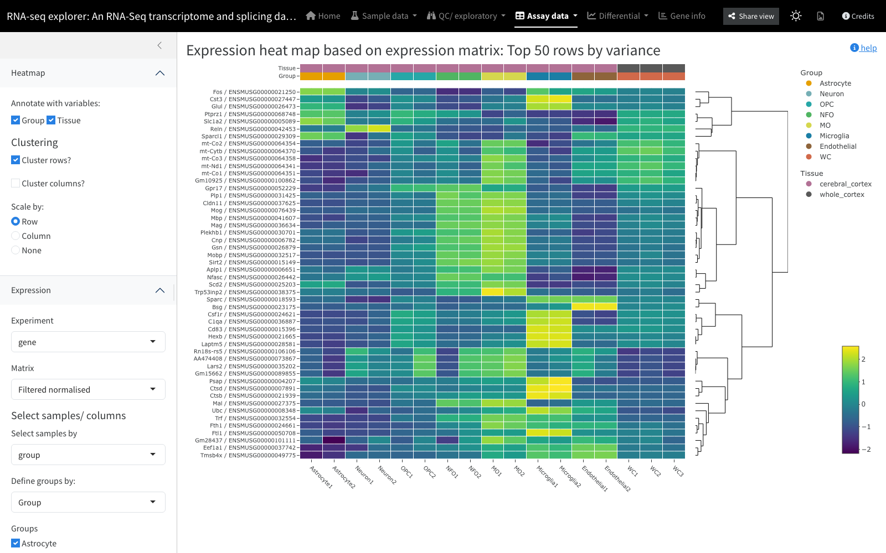
Clustering profiles
Examines clustering patterns within a subset of a matrix. The matrix
is re-scaled by row to give comparable profiles, and a chosen number of
clusters is produced with the clara() method from the
cluster package. The number of clusters is the key control,
and three display modes are offered: a sample of up to 100 profiles per
cluster, or summary statistics (mean or median) with error bars or a
filled variability band. A per-cluster membership matrix can be exported
for further investigation.
Inputs: an assay matrix (variable rows by default) and the
number of clusters. Backed by:
interactive_cluster_profiles.
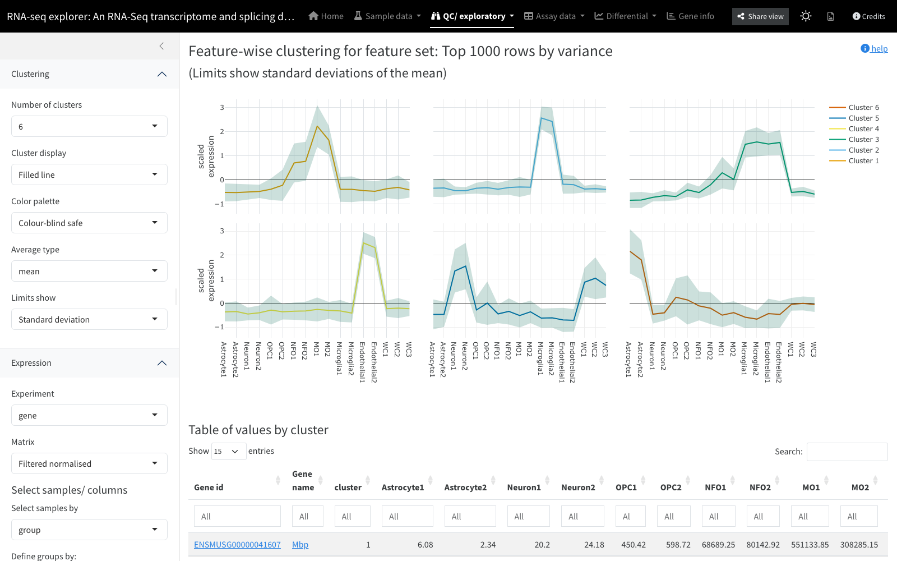
Differential
Panels that visualise or tabulate the results of differential
testing. All require contrasts with statistics (p- and
q-values) in the object’s tests slot; where only a single
assay carries tests, no matrix selector is shown. Fold changes are
computed dynamically from the chosen assay matrix and the way group-wise
averages are calculated (mean by default).
Differential table
View and download the differential statistics: p-values and adjusted p-values (computed prior to loading) alongside fold changes (computed dynamically). Controls select which contrasts to display and apply thresholds. Dynamic filters under “Contrasts” allow complex queries, combining different filter sets across contrasts by intersection (default) or union, for example “features highly significantly up in contrast A but unchanged in contrast B”.
Inputs: contrasts with test statistics; an assay matrix for fold changes.
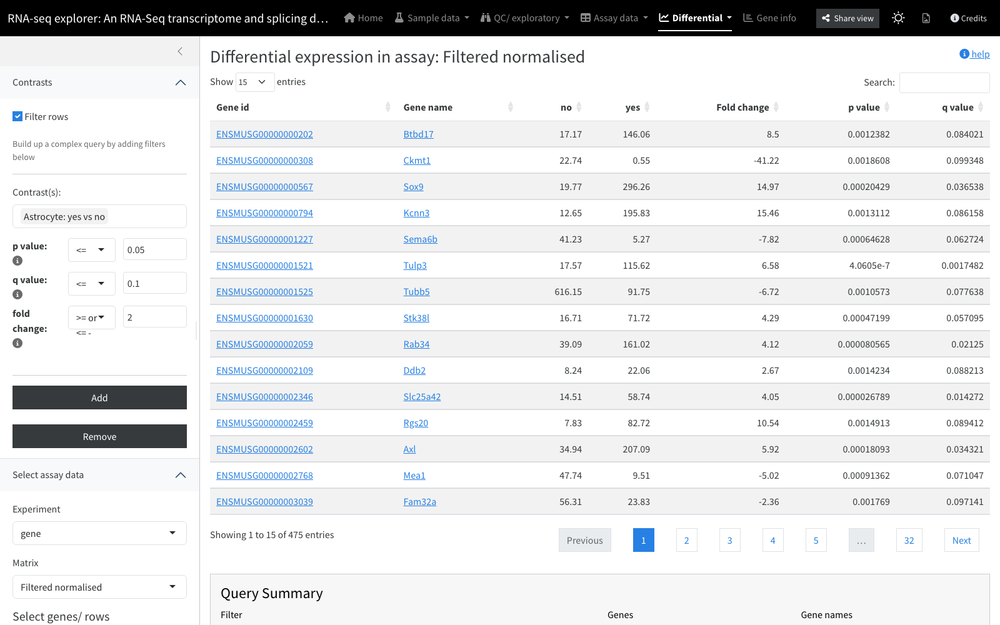
Volcano plot
Plots log2 fold change (x, sign preserved) against -log10 p-value (y), drawn with Plotly. High-magnitude, low-variability changes land at the top-left and top-right extremes, the points of most interest. Points passing the fold-change and q-value thresholds are drawn in active blue with mouse-over detail; those below are inert grey (labelling every point would slow the browser).
Inputs: a contrast, fold-change and q-value thresholds, and
optionally a set of genes to highlight by colour. Backed by:
interactive_scatterplot.
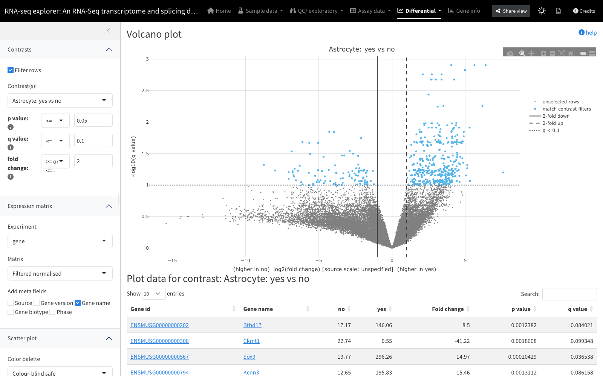
MA plot
Illustrates the relationship between mean expression and fold change, overlaid with significance from a statistical test. At low expression a small absolute difference yields a large fold change that falls within normal variability and is not significant; as expression rises, smaller fold changes become significant. Same threshold and highlight controls as the volcano plot.
Inputs: a contrast, fold-change and q-value thresholds,
optional highlight set. Backed by:
interactive_scatterplot.
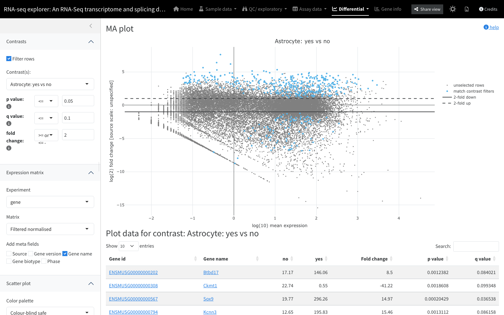
Fold change plot
A simple scatter plot comparing the mean expression value between two groups of samples for every row of a matrix, drawn with Plotly. Points are grey, or blue where they pass the fold-change and (where available) q-value thresholds.
Inputs: an assay matrix, a contrast, thresholds, optional
highlight set. Backed by:
interactive_scatterplot.
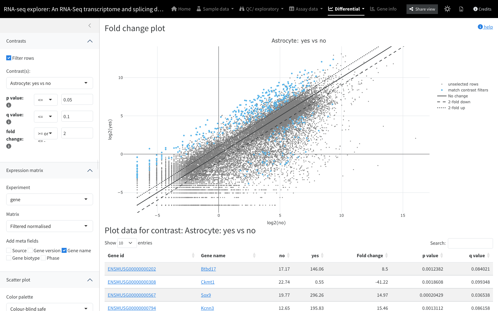
Top gene boxplots
A faceted boxplot for the most differentially expressed genes in a chosen contrast: one panel per gene, samples grouped by the contrast’s two conditions, with the gene’s q-value annotated on its panel and an optional per-sample beeswarm overlay. Genes passing the significance filters can be ranked by q-value or by (absolute) fold change ascending/descending, and the number drawn is capped by a control. A colour-blind-safe palette is the default.
Inputs: a contrast, significance thresholds, a ranking
metric, a gene count, and a colour palette. Backed by:
interactive_topgene_boxplots.
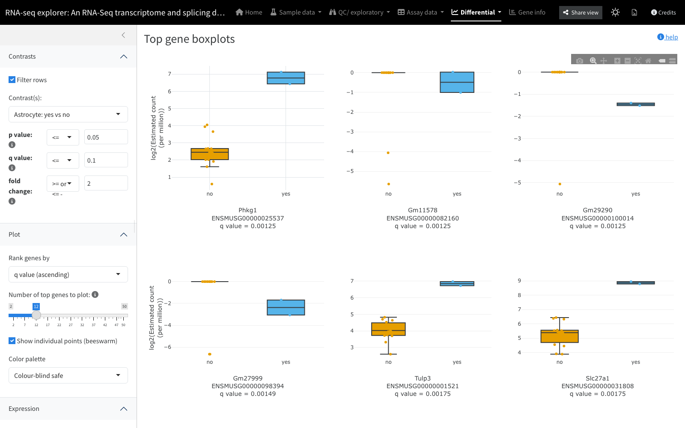
UpSet
An UpSet set-intersection plot (after Lex, Gehlenborg et al.), where the sets are gene lists derived from the supplied contrasts and filters. You can restrict the number of contrasts considered and the number of intersections shown. The intersection type defaults to exclusive (Venn/Euler-style, so bars sum to the total), or can be set to “Complete” so each bar reflects the full pairwise intersection (bars then overlap and no longer sum to the total). The plot is downloadable.
Inputs: contrasts with thresholds, and an assay matrix for
generating the comparisons. Backed by:
interactive_upset.
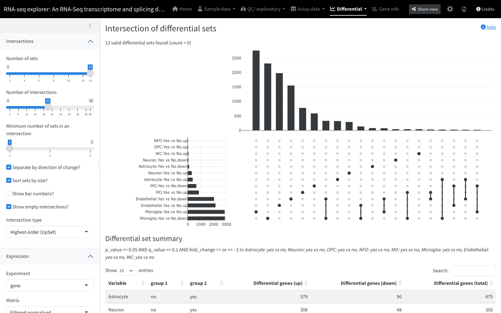
Gene-level
Panels centred on individual genes or gene sets.
Gene page (and gene model)
Detailed information for one or more genes selected by label or identifier. It combines an expression bar plot (expression per sample, optionally coloured by an experimental variable) with a gene info table of annotation (with links out to external resources where configured), a contrasts table listing that gene’s differential results across all defined contrasts, and, where the experiment has an associated Ensembl species, a gene model view: an interactive genome-browser diagram of the gene’s exon/transcript structure.
Inputs: one or more selected genes; an assay matrix and a
“colour by” variable for the bar plot; contrasts for the results table;
an Ensembl species (plus
chromosome_name/start_position/end_position
feature metadata) for the gene model. Backed by:
interactive_scatterplot for the expression bar plot; the
gene model view uses the igvShiny (igv.js) browser.

Gene-set barcode plot
An interactive barcode plot reproducing the statistics behind limma’s
barcodeplot() and building on Subramanian et al. (GSEA). It
shows where the members of one gene set fall in the overall list of
genes ranked by fold change between two conditions; “bunching up” at one
extreme indicates coordinated up- or down-regulation. The FDR is
annotated where available, hovering a tick shows the gene and its fold
change, and an accompanying table gives contrast detail for the set.
Inputs: a single selected gene set, a contrast, and an assay
matrix (note the displayed FDR may correspond to only one of the
available matrices). Backed by:
interactive_barcodeplot.
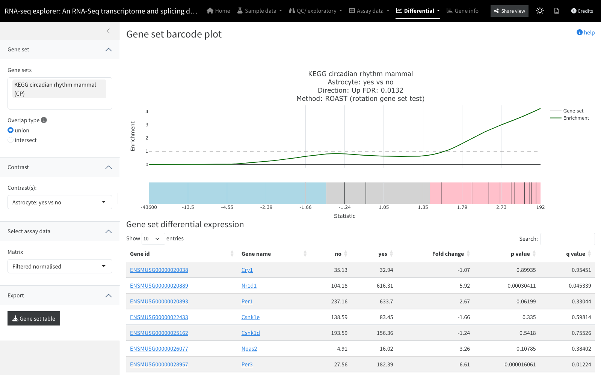
Gene-set analysis table
A gene set analysis table, potentially produced by a variety of methods (the “Method” line names the tool, e.g. GSEA or ROAST, that generated the current results), typically showing gene sets with p-values and FDRs. Filters select a single gene-set type (e.g. KEGG) and optionally specific sets. For convenience, the significantly differential genes of the appropriate direction are annotated to each set; the default is to filter those genes only on unadjusted p-value, since selection has already been applied at the set level. Gene sets link through to the barcode plot, and individual genes to their expression bar plots.
Inputs: precomputed gene set analysis results, a gene-set type, and a contrast with gene-level thresholds.
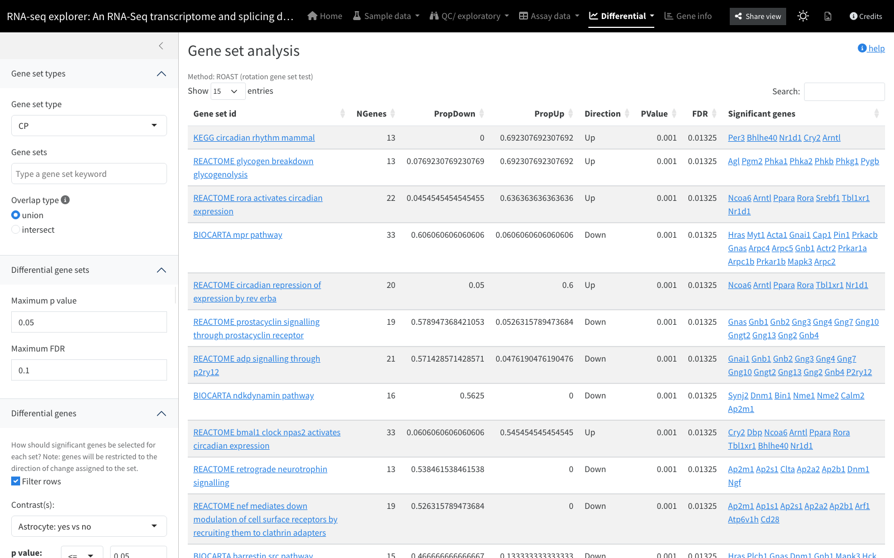
QC / platform-specific
Panels tied to a particular assay platform or analysis method.
Illumina array QC
Plots the mean of the Illumina control probes for each sample,
grouped by condition. Expected relationships to check (listed alongside
the plot) include cy3_high > cy3_med > cy3_low, low
stringency near zero, high stringency at or below cy3 high, housekeeping
and biotin high, and negative controls near zero.
Inputs: Illumina control-probe measurements per sample.
Backed by:
interactive_illumina_control_probes.
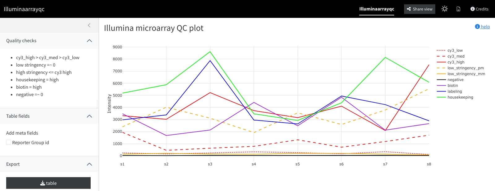
DEXSeq plot
Visualises the output of the DEXSeq package for differential exon usage between conditions. Per exon and sample, DEXSeq considers the ratio of reads mapping to that exon versus other exons of the same gene, and how that ratio changes across conditions. Individual sub-plots can be toggled: model-derived expression per condition, exon usage coefficients, per-sample normalised counts, a gene model colouring exons pink where significant differential usage is seen, and a transcripts view for comparing usage against known transcript structures. An accompanying table gives normalised exon counts and relative exon usage per condition.
Inputs: DEXSeq results, a gene to plot, an FDR threshold for colouring exons, and which sub-plots to show.
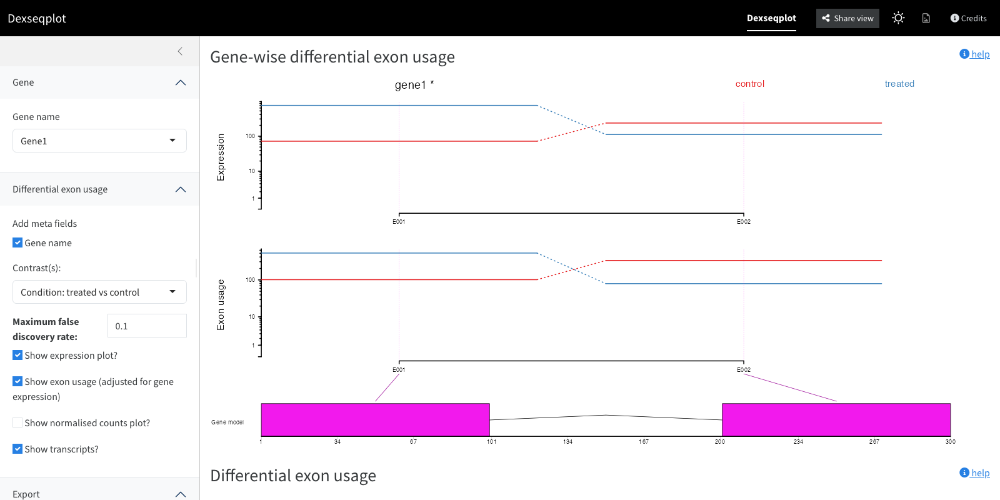
DEXSeq table
The tabular counterpart to the DEXSeq plot: normalised exon count and relative exon usage per condition, where large usage changes appear as large fold changes and low FDR-adjusted p-values. Controls filter on fold change and adjusted p-value; by default only the single most significant differential exon per gene is shown (untick to show all).
Inputs: DEXSeq results and fold-change/FDR filters.
Read reports
Summaries of read counts, drawn as Plotly bar plots from information supplied when the resource was built. Example reports include a read attrition plot (where reads were lost across analysis stages, drawn as overlapping bars since each stage is a subset of the previous), a read distribution plot (reads by genomic feature type such as exon or intron), and a read gene-type plot (by gene biotype, e.g. protein coding or rRNA).
Inputs: precomputed read-summary tables provided with the
dataset. Backed by: interactive_barchart /
interactive_count_barplot.
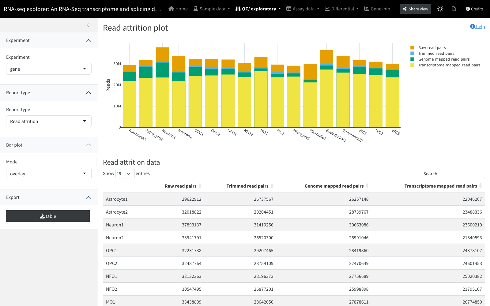
Data tables
Panels for viewing and downloading the underlying data and metadata.
Assay data table
View and download the raw matrix data held in the assays
slots. The data are organised into experiments (each
with its own set of features, e.g. one for transcripts and one for
genes), and each experiment holds multiple assays
(measurements of the same features and samples, or different processing
levels). The data can optionally be summarised into means per sample
group.
Inputs: a choice of experiment and assay, plus row and column selection.
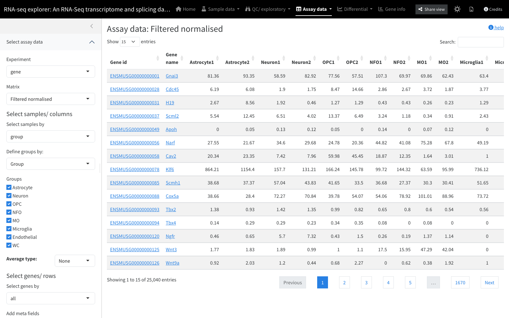
Sample metadata table
Shows the experimental information supplied alongside the primary data (used, for example, for batch correction or to define comparison groups); factors from this table colour plots elsewhere in the app. A Category counts tab counts samples by a categorical field (e.g. per treatment group), optionally split by a second field into grouped or stacked bars. Identifier-like fields (near-unique per row) are not offered for counting.
Inputs: sample (column) metadata.
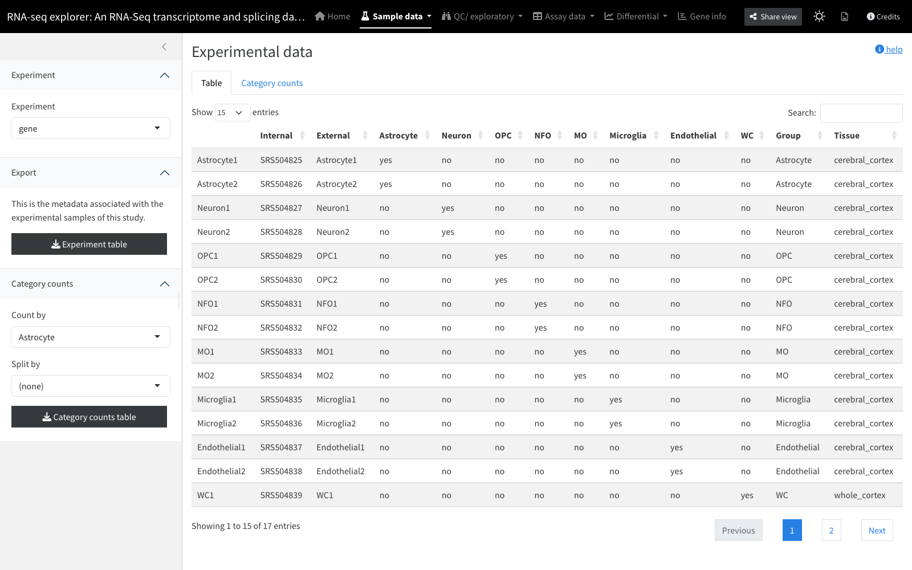
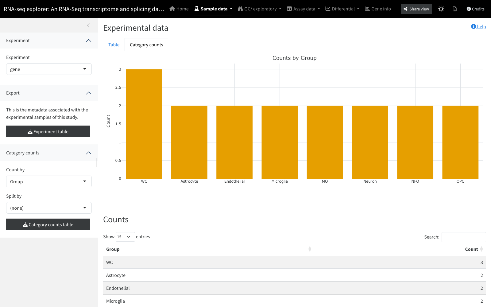
Row / feature metadata table
Shows the metadata associated with each matrix row (e.g. genes or transcripts) in the selected experiment; its content depends on what was added during analysis. As with the sample table, a Category counts tab counts rows by a categorical field (e.g. genes per biotype), optionally split by a second field, excluding identifier-like fields.
Inputs: row (feature) metadata for the selected experiment.
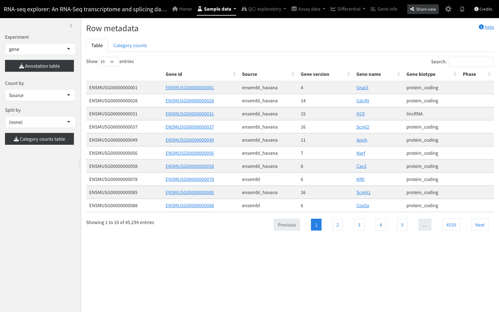
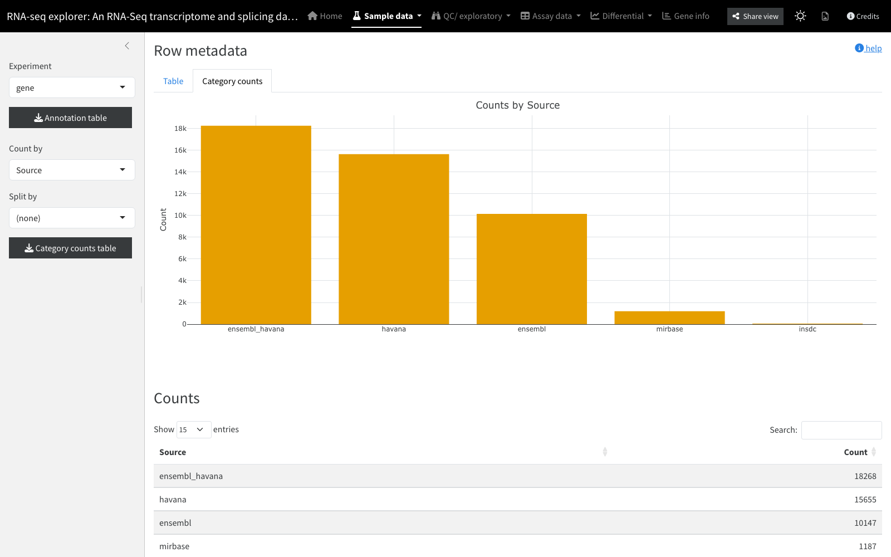